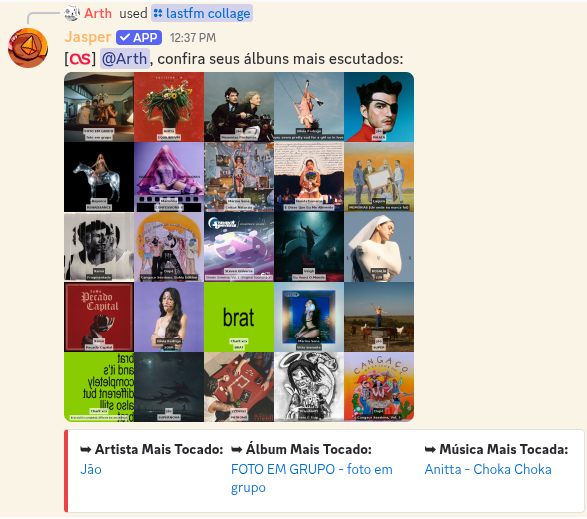
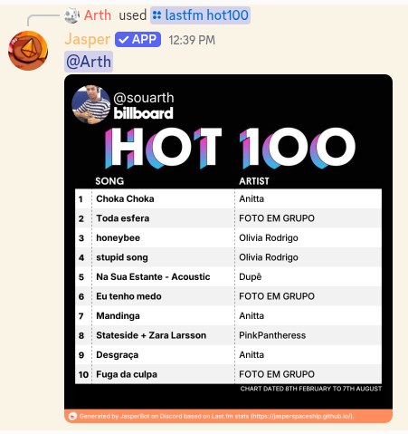
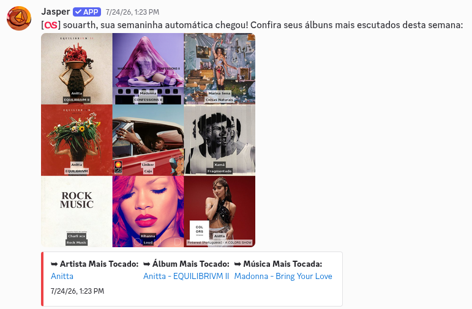

➥ Se você usa o
Last.fm pra registrar o que escuta, eu consigo
transformar esse histórico em imagem: colagem de capas, um chart no estilo Billboard e um resumo semanal
que chega sozinho na sua DM.
➥ Eu não coleto nada disso por conta própria. Você me diz qual é o seu usuário do Last.fm, e eu leio os
dados públicos que já estão lá.
➥ Segue um pequeno tutorial de como usar:
1. Comece vinculando sua conta com /lastfm login, passando seu nome de
usuário do Last.fm. Eu confiro se a conta existe antes de aceitar.
Depois de vincular, só é possível trocar de conta a cada 30 dias, então confira se digitou certo.
2. O /lastfm collage monta uma colagem com as capas dos álbuns que você
mais escutou. Você escolhe:
▸ Tamanho: de 3x3 até 10x10, ou seja, de 9 a 100 álbuns.
▸ Período: 7 dias, 1 mês, 3 meses, 6 meses, 12 meses ou todo o histórico da conta.
▸ Títulos: se quiser o nome do álbum e do artista escrito em cima de cada capa, ou só as capas.
Junto da imagem eu mando seu artista, álbum e música mais tocados no período.

3. O
/lastfm hot100 gera uma imagem no estilo da
Billboard Hot 100 com as suas músicas mais escutadas no período que você escolher. Também dá pra
passar outra pessoa e ver os charts dela, desde que ela também tenha vinculado a conta.

4. O
/lastfm semaninha liga o resumo automático: toda
sexta-feira eu te mando nas mensagens diretas uma colagem da semana com o total de scrobbles. Use o
mesmo comando pra desligar.
Pra isso funcionar, suas DMs precisam estar abertas pra mim. E o mesmo comando controla o
resumo anual, que chega no último dia do ano.

5. Com a conta vinculada, o seu
perfil ganha uma linha de música: o artista
e a faixa que você escutou por último. Se eu não encontrar nenhum scrobble recente, mostro no lugar o
artista que você mais ouviu nos
últimos 7 dias.
➥ Espero que você aproveite! Qualquer dúvida, sinta-se livre para perguntar no meu
canal de suporte.
Publicado 7 de agosto de 2026. Dependendo da data de publicação, o texto
pode estar levemente desatualizado.